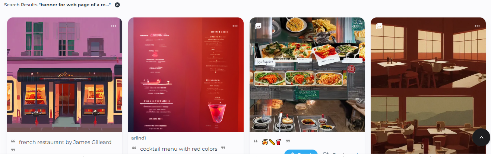
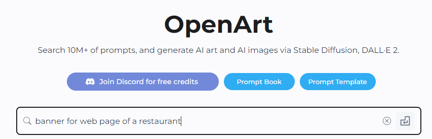

Usemos herramientas de IA en las clases
Si eres docente te invitamos a plantear actividades de aprendizaje que involucren el uso de herramientas de IA, bien sea que las uses para orientar las actividades o que sean los estudiantes quienes las usen directamente.
Recuerda llevar un reporte de las herramientas que usas en clase y entregar este reporte cuando sea solicitado por tu líder de sala de experiencia docente. Si tienes acceso al Padlet creado por tu líder, también puedes reportar las herramientas allí.
Para cada herramienta que se utilice se debe reportar la siguiente información: Nombre de la herramienta, fecha, imagen o evidencia del uso de la herramienta, docente, enlace a la herramienta, programa, asignatura, descripción de cómo se usó la herramienta.
Ejemplo
| Herramienta | OpenArt |
|---|---|
| Fecha | 23/03/2023 |
| Evidencias |
 Búsqueda: https://openart.ai/discovery?q=banner+for+web+page+of+a+restaurant  |
| Docente | Cecilia Ávila |
| Enlace de consulta | https://openart.ai/discovery |
| Programa | Ingeniería de Sistemas |
| Asignatura | Nuevas Tecnologías de Desarrollo |
| Descripción de la actividad |
Cada equipo de trabajo debe presentar los mockups del proyecto final de clase. Uno de los elementos a incluir es un banner para la página web de inicio. Se pide a los estudiantes que usen la herramienta OpeArt para generar el banner usando palabras clave en inglés y que estén relacionadas con el tema del proyecto. Los estudiantes usaron la herramienta y generaron imágenes que contrastaran con el diseño propuesto por ellos en su aplicación web. Aquí se presenta un ejemplo donde se busca un banner para el sitio web de un restaurante. |